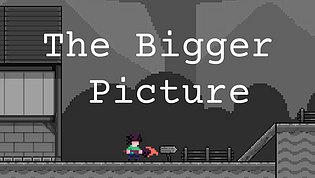

Day of Juniper
September 23rd - October 25th, 2021 (Released)
A 2D adventure game with light platforming and focus on exploration and world building through a dex and journal that will help keep track of objectives and things learned (Buddy Up Jam submission).
dFTR - Unity!
April 10th - April 14th, 2021 (On hold)
Transforming the original project for the Game Boy, and creating it onto a more modern game engine.

The Bigger Picture
February 6th - February 21st, 2022 (Released)
An artist remembers how to see the bigger picture. (Buddy Up Jam: Winter 2022 submission)

Tronpical
August 6th - August 11th, 2021 (Released)
First-Person Multiplayer Spleef where the objective of the game is to run around and try to be the last person standing (Weekly Game Jam - Week 213 submission).